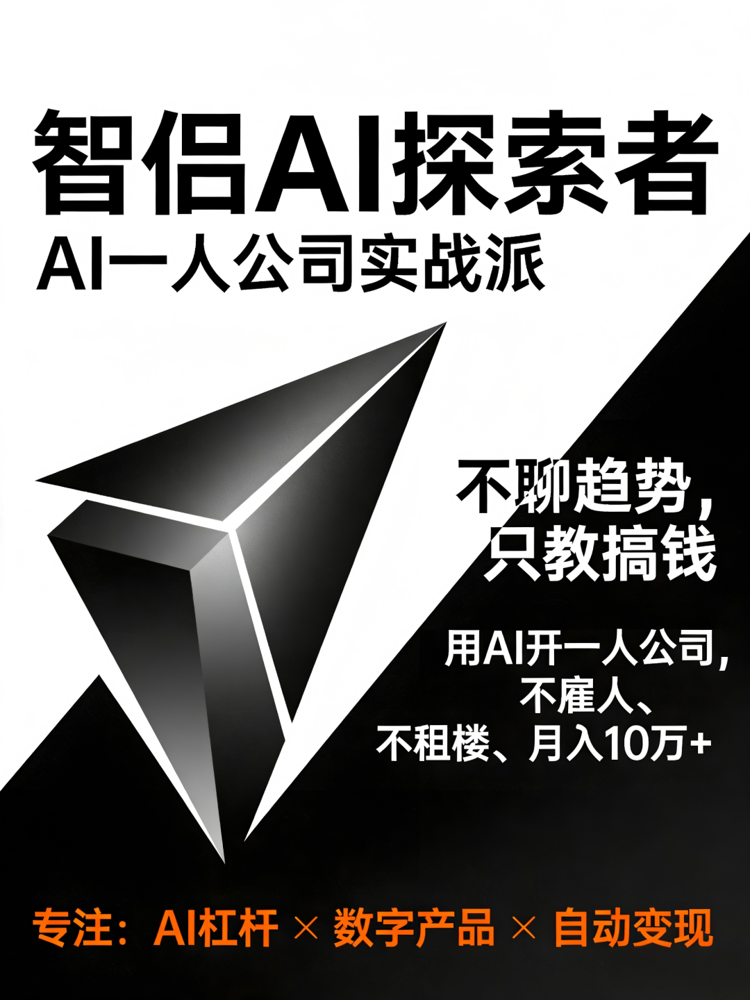
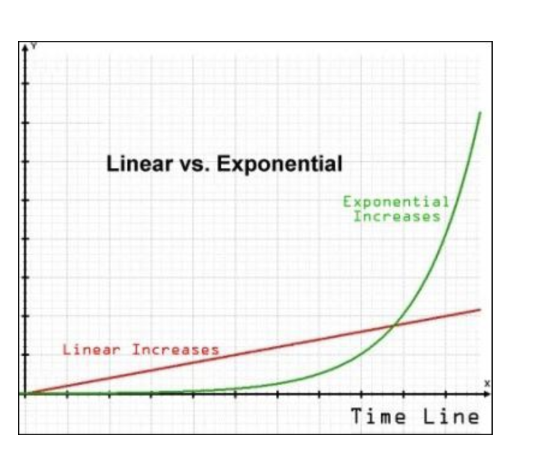
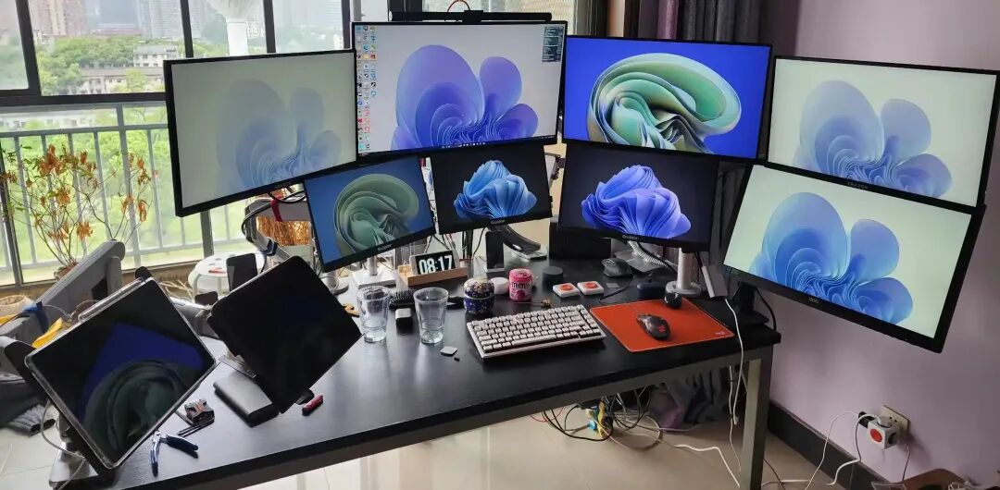
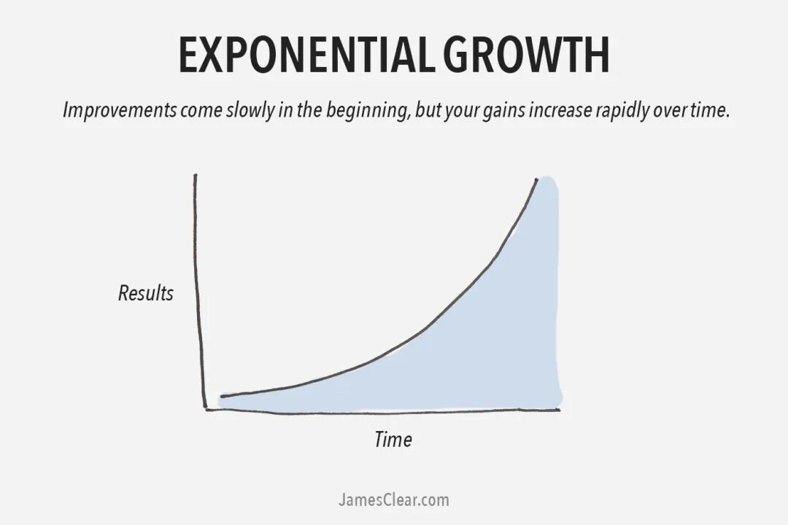
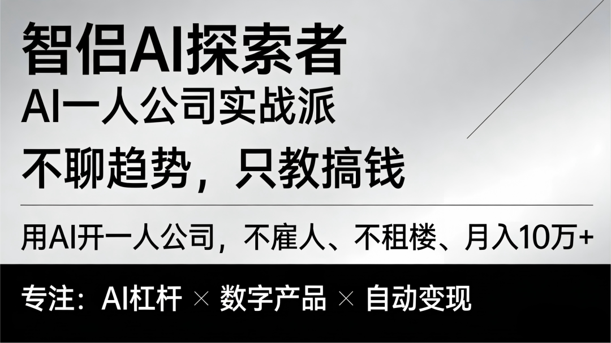

🚀 智侣AI探索者 001
2026搞钱真相：月入10万的"一人公司"暴力拆解，3个真实案例看完直接抄
⏱️ 阅读时间：12分钟 | 💰 全文无废话，只聊真金白银
👤 作者：智侣
AI一人公司践行者 · 专注AI杠杆方法论
"凌晨两点，陈子顺的手机还在震动。TikTok后台显示，他的AI数字人又卖出去了37条毛毯，而他正在熟睡。
同一时间，上海某大厂，35岁的老王刚写完第8版周报，时薪算下来150块。
这就是2026年的残酷分层。"

🔥 一、一个残忍的对比：时薪150元 vs 时薪1250元
2026年开年，我朋友圈三个人，三种活法：
老王，35岁，大厂P7，月薪3万，每天干到凌晨，时薪150元。AI对他来说是"润色周报的工具"。
小李，28岁，前运营，现在一人公司，月入5万，每天工作4小时，时薪625元。AI是他的"外包团队"。
陈子顺，30岁，沪漂，上海临港OPC社区成员，1个人+一台电脑，4个月在日本市场卖了500万货，净利润125万，时薪1250元。AI是他的30人销售军团。
差距在哪？
认知差 = 收入差 × 100倍。
老王把AI当打字机，小李把AI当实习生，陈子顺把AI当不要工资的员工。
你看，同样是ChatGPT：
老王："帮我改一下这段话，要正式一点。" 陈子顺："你是24小时日语主播，性格热情专业，现在直播卖毛毯，目标是让日本人觉得不买就亏了。"
前者替代了输入法，后者替代了人力资源部。
这就是今天要聊的：AI一人公司（AI-OPC）。
不是概念，是正在发生的财富转移。
💡 二、核心认知：AI不是你的副驾驶，是你的打工仔
先纠正一个致命误区。
绝大多数人用AI，是"工具思维"——我要写篇文章，让AI帮我写；我要做个图，让AI帮我画。这是在用金锄头耕地。
真正的狠人，是"杠杆思维"——用AI重构商业链条的每一个环节。
公式很简单：你 + AI = 千军万马。
不是比喻。是真的。
接下来三个真实案例，我会把他们扒光，让你看清每一分钱是怎么进来的。
⚔️ 三、案例一：AI跨境"倒爷"陈子顺｜4个月500万营收，成本只有传统1/10
人物画像：陈子顺，沪咪科技创始人，上海临港OPC社区成员，90后，之前做过传统电商，被库存压垮过。
战绩：2025年Q4，单款发热毛毯日本市场销售额500万+，净利润125万，利润率25%（在跨境行业里这是天文数字）。
配置：1人（他自己）+ AI数字人军团 + 1688供应链。
工作场景：居家办公，一台MacBook Pro，偶尔去临港的共享办公位蹭咖啡。
🔪 暴力拆解
1. 商业模式：寄生在全球供应链上的"数字倒爷"
传统跨境电商怎么玩？租办公室→招5个运营→囤货压资金→投广告烧钱→处理售后。重资产，重人力，风险极高。
陈子顺的OPC模式：零库存、零员工、24小时全自动运转。
- 选品
：Google Trends抓日本"反共识需求"（电费上涨导致发热毛毯搜索量暴涨300%） - 供应链
：1688谈一件代发，零库存，客户下单后供应商直接发日本 - 销售
：HeyGen生成日语数字人，在TikTok/Amazon Live挂24小时直播，自动回复常见问题 - 交付
：自动物流追踪，AI客服处理售后，全程无需人工
核心杠杆点：AI数字人替代了真人主播+客服+翻译，人力成本降低70%，直播时长拉到24小时×7天。
2. 收入与成本（真实账目）
销售额：500万（4个月，日本市场）毛利率：35%（行业平均15-20%，他选品精准）各项扣点：平台费+物流+AI工具费≈10%净利润：125万（4个月）= 31万/月
成本对比表（震撼版）：
3. 可复制的SOP（今晚就能干）
Step 1：抓需求（0成本）
打开Google Trends，搜"heated blanket japan 2025"，看搜索曲线。如果近3个月暴涨，且竞品不多，这就是你的金矿。
Step 2：找供应链（0成本）
1688搜"发热毛毯 一件代发"，谈3家供应商，要样品测质量。记住：绝不囤货，只玩代发。
Step 3：造数字人（成本<500元/月）
用HeyGen或D-ID，上传你的照片，生成日语数字人。设置好话术库，让它24小时喊"寒い冬を暖かく"（温暖的冬天）。
Step 4：挂直播（自动化）
TikTok Shop开通后，设置数字人循环直播，AI自动回复"送料無料ですか？"（包邮吗？）这种问题。
Step 5：收钱（手机操作）
PayPal/连连支付自动到账，你只管看数据，每天工作就是调整AI话术和选品。
💡 核心认知：AI抹平了语言障碍和人力成本，一个人可以寄生在全球供应链上，做"超级中介"。你卖的不是货，是信息差。

⚔️ 四、案例二：独立开发者Pieter Levels｜13年70个项目，月入3万美金
如果说陈子顺是"卖货型OPC"的代表，那Pieter就是"产品型OPC"的巅峰。
人物画像：Pieter Levels，荷兰人，全球数字游民精神领袖，纯独立开发者，不写代码以外的任何废话。
战绩：13年开发70+项目，Nomad List（数字游民社区）、Remote OK（远程招聘）等产品，月收入3万+美金（约20万+人民币），利润率85%+。
配置：1人，1个背包，1台笔记本，全球旅居（最近在巴厘岛）。
🔪 暴力拆解
1. 商业模式："速生速死"的产品矩阵
Pieter反常识的一点是：不做大做全，只做小工具、垂直需求、快速验证。
他的核心公式：痛点强度 × 解决方案速度 × 收费意愿。
- Nomad List
：解决"去哪当数字游民"的痛点，订阅制 - Remote OK
：解决"找远程工作"的痛点，按条收费 - 其他小工具
：Airport Status、Nomad Gear等，长尾收入
收入结构（让人流口水的现金流）：
Nomad List：$20/月 × 2000+用户 = $4万+/月Remote OK：$299/条 × 100+条/月 = $3万+/月其他工具：$1-2万/月波动总收入：$8-10万/月成本：服务器费$500/月 + 网络咖啡钱 ≈ $1000/月净利润率：85%+
2. 暴力方法论：72小时MVP法则
Pieter有一套被全球数万开发者验证的打法：
Phase 1：验证需求（0代码，3天）
- 绝不先写代码
。先在Twitter发想法："我要做个XX工具，你们觉得有人需要吗？" 或用Carrd搭个单页，放个"立即购买"按钮（其实还没做），统计点击率 - 铁律
：点击率>5%才做，<3%直接放弃。拒绝自嗨，拒绝"我觉得有用"。
Phase 2：极限开发（72小时）
用Next.js或Bubble快速开发，能跑通就行，UI像狗屎也没关系 - Day 4就上线收费
，定价$30-50/月（远高于Netflix的$10，用价格过滤白嫖党）
Phase 3：复利积累（13年70个项目）
每个项目都是代码资产，订阅制带来睡后收入 - 绝不雇人
，用AI工具替代，保持利润率
3. 避坑指南（血泪经验）
❌ 不做免费版：免费用户转化率<1%，是纯粹的负债 ❌ 不拿融资：保持100%决策权，利润全拿，不被VC绑架 ❌ 不追求完美：If you're not embarrassed by your first version, you've launched too late.（如果你不对第一版感到尴尬，那你上线太晚了）
💡 核心认知：代码是杠杆，订阅是现金流，速度是护城河。一人公司不靠估值活着，靠利润率和现金流活着。
⚔️ 五、案例三：高客单价"知识贩子"｜零团队月入10万+，卖的是"认知套利"
最后一个案例，适合有专业技能的"手艺人"。
人物画像：匿名，国内税务筹划赛道主理人，前四大咨询顾问，30岁，裸辞单干。
战绩：2024年个人营收120万+，净利润100万+，净利润率96%，0雇员，每天工作4-5小时，其余时间陪娃。
模式：高客单价咨询（5万/单）+ 标准化方案包（1万/套）+ 私域社群（3000元/年）。
🔪 暴力拆解
1. 商业模式：认知差的极致变现
他不卖99元的低价课，只卖3-5万/单的B端咨询。为什么敢卖这么贵？
因为他用AI把交付效率提升了5倍，但价格没降。
- 传统做法
：一个税务方案，资深顾问写3天，收5万，人工成本3万，利润2万。 - AI做法
：AI生成方案初稿（30分钟）+ 人工审核优化（1小时），成本忽略不计，利润近5万。
收入结构拆解：
To B咨询：5万/单 × 2单/月 = 10万/月（主要收入）标准化方案包：1万/套 × 3套/月 = 3万/月（被动收入，AI自动生成）私域会员：3000元/年 × 50人 = 1.25万/月（复购收入）总收入：14万+/月成本：AI工具费2000元 + 外包剪辑3000元 = 5000元/月
2. 冷启动路径（可复制）
Phase 1：建立专家人设（0-3个月，0成本）
在知乎/即刻/小红书输出"扎心真相"（不是干货，是让客户失眠的内容） 每周3篇长文，全部自己写（AI辅助），每篇文末放"私信领《XX避坑指南》"，导私域 - 关键
：内容要硬核到让客户觉得"这人必须给我服务，哪怕贵点"
Phase 2：测试付费（3-6个月）
先做低价诊断：500元/次，30分钟电话，测试市场反应 如果转化率>10%，立刻推出高价陪跑：3-5万/年，限量10人 - 定价逻辑
：客户省下的税的10%，客单价天然高
Phase 3：产品化（6个月后）
把咨询中的高频问题，做成录播课，卖1万/套，AI自动交付 用Claude生成方案模板，1小时干完原来1天的活 建立付费社群，收年费，卖的是信息差和圈层
3. 风险管控（OPC必看）
- AB角制度
：关键业务（支付、客服）有备用方案，防止AI掉链子 - 法务外包
：合同用AI生成+律师审核（单次500元），绝不省这个钱 - 合规底线
：高客单价必须签合同，避免纠纷
💡 核心认知：专业能力是地基，AI是放大器，高客单价是护城河。一人公司做低价必死，做高价才能活。你卖的不是时间，是AI辅助下的认知密度。

💰 六、CBOE模型：把三个案例炼成你的印钞机
看完三个案例，你会发现他们都在做同一件事：用AI重构商业的四个环节。
我把它总结为CBOE模型，这是你开一人公司的施工图纸。
1. C - CBO（首席品牌官）：复刻专家大脑
陈子顺复刻了"日本电商专家"大脑来选品，知识贩子复刻了"税务专家"大脑来写方案。
怎么做：
- 采集
：扒光行业Top10大咖的50万字语料（演讲、文章、案例） - 训练
：用Claude Projects建立"专家大脑"，让它学习思维模式 - 输出
：用专家视角生产内容，80%像大咖，20%是你的个性
Prompt模板（拿来就用）：
你现在是[税务筹划专家]，拥有15年经验，擅长帮中小企业合规节税。请基于以下背景输出方案：[企业背景]要求：1. 使用专业术语但解释清楚2. 引用2025年最新税法条款3. 给出3个可落地的节税点，附金额测算4. 指出2个潜在风险点（制造紧迫感）5. 语气自信、犀利、有权威感
2. B - Brand（品牌）：品牌是信任，不是Logo
Pieter没有VI设计，没有官网美化，但他持续输出了13年，品牌=持续输出×时间×信任。
AI加速法：
- 视觉
：Midjourney生成头像，2小时搞定，不用等设计师2周 - 内容
：AI拆解爆款结构，模仿生产，3天而非3个月 - 信任
：持续输出+AI放大，3个月建立背书
3. O - Offer（产品）：只做高利润的数字产品
产品漏斗设计：
引流款：9.9元《AI工具大全》（自动发货，筛选意向）↓利润款：999元《训练营》（录播+社群，批量交付）↓高端款：5000元/月 1v1陪跑（限量，高利润）↓股权款：参与投资（未来可能性）
4. E - Editor（内容+销售）：拆解爆款，批量转化
陈子顺日产50篇内容+10条视频，靠的不是勤奋，是流水线。
内容SOP：
输入：1篇10万+爆款↓AI拆解：结构+情绪+金句（10分钟）↓AI生成：3篇同结构变体（10分钟）↓人工改：加入个人故事（20分钟）↓数字人录制：批量生产（1小时/10条）↓多平台分发：自动发布
销售转化：PAS模型
- P（痛点）
：日本冬天电费暴涨，开暖气一个月2万日元 - A（煽动）
：一个人冻得发抖，还要算计电费不敢开太高 - S（解决）
：这款毛毯3秒升温，一晚只需0.1度电 - 行动
：今天直播间半价，仅限前50名
转化率对比：普通文案<1%，PAS文案8-12%。
🚀 七、72小时行动计划：今晚就开始
别收藏，现在就干。
Tonight（今晚，30分钟）：
拿出纸笔，写下你拥有的"可变现技能"（哪怕很小众，比如"帮程序员报税"或"选品"）。
Tomorrow（明天，2小时）：
打开Google Trends，搜"how to [你的技能]"，验证海外需求是否存在。
Day 3（后天，4小时）：
发一条朋友圈/小红书，提供**"最小服务包"**（比如"9.9元帮你诊断税务问题"或"免费帮你选3个品"），测试有没有人买单。
如果有了第一笔收入，哪怕只有9.9元，说明模式跑通了。
💬 结语：做指挥官，别做步兵
2026年，AI是核武器。
但大多数人只拿它砸核桃——润色周报、写个邮件、做个PPT。
陈子顺拿它开了家跨境贸易公司，Pieter拿它建了70个自动赚钱机器，知识贩子拿它做了5万客单价的咨询服务。
你不需要：
❌ 租办公室（他们都在家/咖啡馆/巴厘岛） ❌ 雇员工（AI就是30人团队，不请假不闹事） ❌ 融资本（利润>80%，现金流健康到可怕） ❌ 扛风险（MVP验证，72小时见分晓）
你只需要：
✅ 一个清晰的赛道（卖货/做产品/卖服务，三选一） ✅ 一套AI工具链（数字人+自动化+专家大脑） ✅ 持续执行的意志（Pieter坚持了13年70个项目）
AI放大你。
你是士兵，AI就是你的army。
你是将军，AI就是你的千军万马。
2026年，公司越小，利润越高，人越自由。
这不是鸡汤，这是正在发生的商业革命。
你，准备什么时候开张？
📌 工具包（建议收藏）：
- 趋势验证
：Google Trends、5118、SparkToro - AI工具栈
：Claude（大脑）、Midjourney（视觉）、HeyGen（数字人）、Replit（代码） - 收款
：Stripe（海外）、有赞（国内）、Wise（跨境转账）

下期预告：《AI一人公司2.0：如何用数字人团队，7×24小时自动赚钱》
互动话题：你现在用AI做什么？
A. 砸核桃（写周报）
B. 砌墙（辅助工作）
C. 建房子（重构工作流）
D. 开公司（规模化变现）
评论区送：《AI一人公司启动包》（含CBOE模型SOP+3个案例完整Prompt+72小时MVP清单）。
这里是【智侣AI探索者】。
AI是杠杆，你是支点。
撬动未来，从此刻开始。